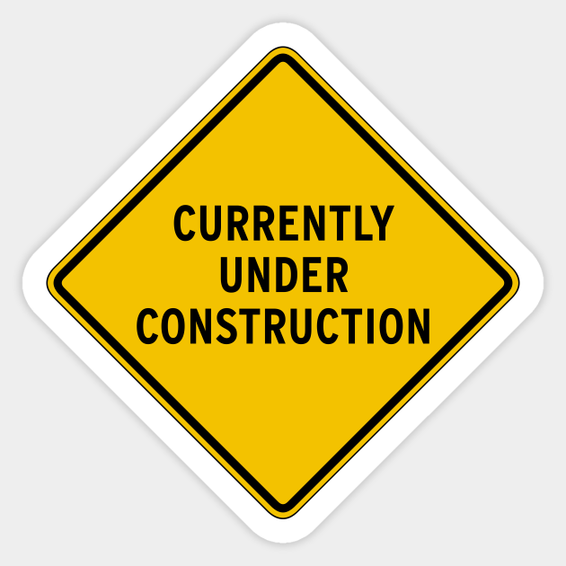

|
Where did this interest start?
My first experience with game design was
in 9th grade. I took an Intro to Comp Sci class and we were learning
JavaScript. To test our knowledge, we needed to make two final projects.
The first project was an interactive card, and the second project was a
video game of choice. My interactive card was one in which I invited
somebody to hang out. Going through the pages, they had to choose the
different options for movies, snacks, and drinks! For the game, I made a
quest style game inspired by slime rancher!
What are my favorite types of games?
My preference in games lies in story games.
Visual novels and simulations both capture my attention. Games with elaborate
plots enrapture my attention just as much as reading. The simulation games
also are relaxing. There is something calming about completing the same task
over and over again. Building something to your design and not worring about
the real world consequences are nice. It is another form of escapism that I
thoroughly enjoy.
|
 |